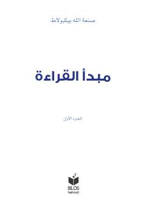

MQArab tilini noldan o'rganuvchilar uchun boshlang'ich darslik.
Ushbu kitob mashhur arabshunos olim San’atulloh Bekpo‘latning arab tilini o‘rganish uchun mo‘ljallangan "Mabdaul qiroat" asarining birinchi qismidir. Qo‘llanma zamonaviy talablarga moslashtirilgan holda lotin alifbosida nashr etilgan bo‘lib, boshlovchilar uchun arab tilidan boshlang'ich bilim beradi.